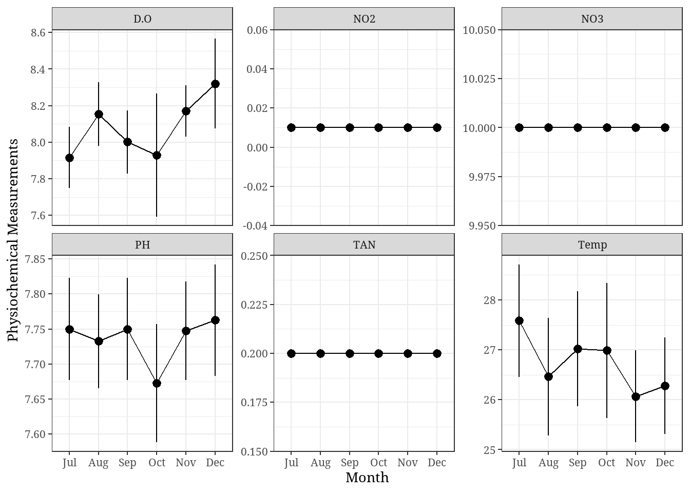
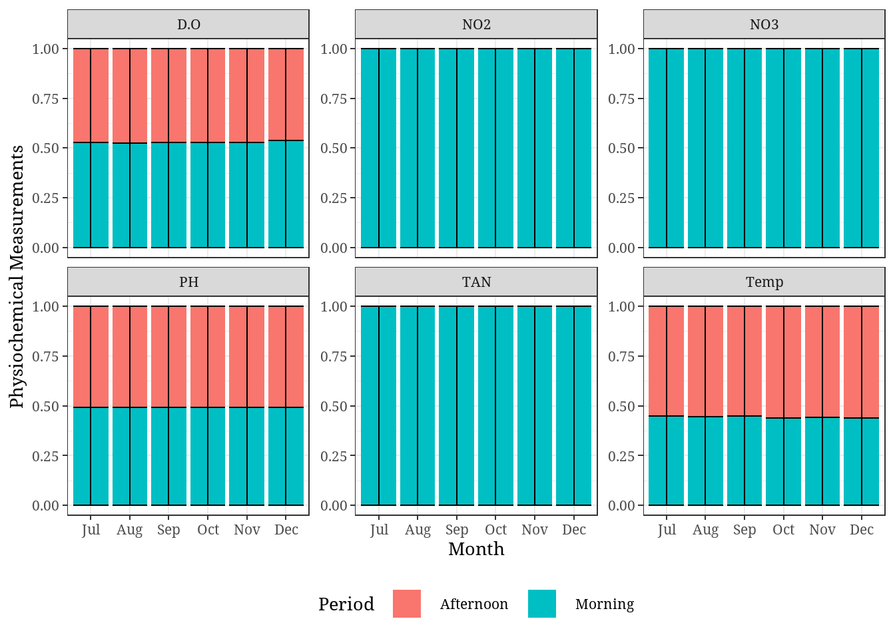
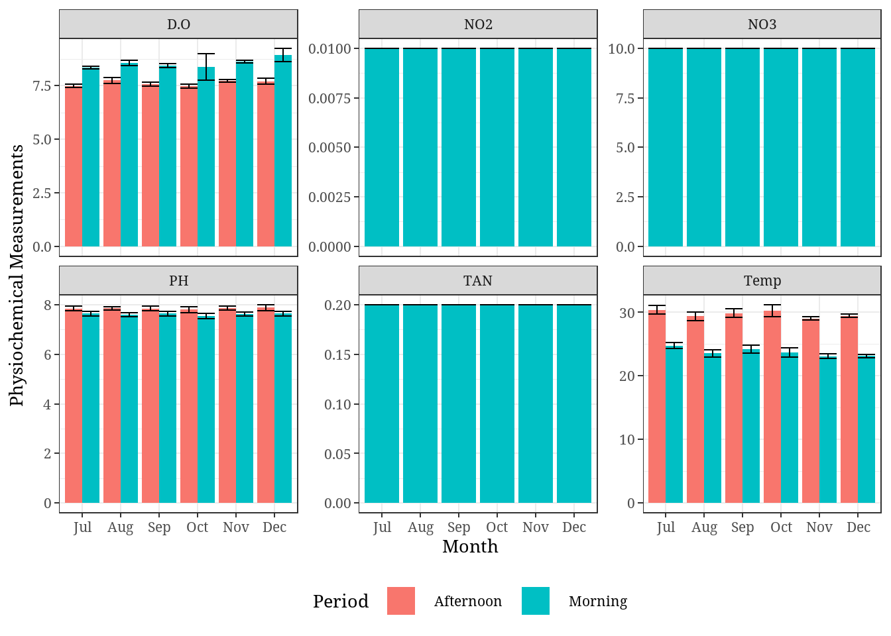
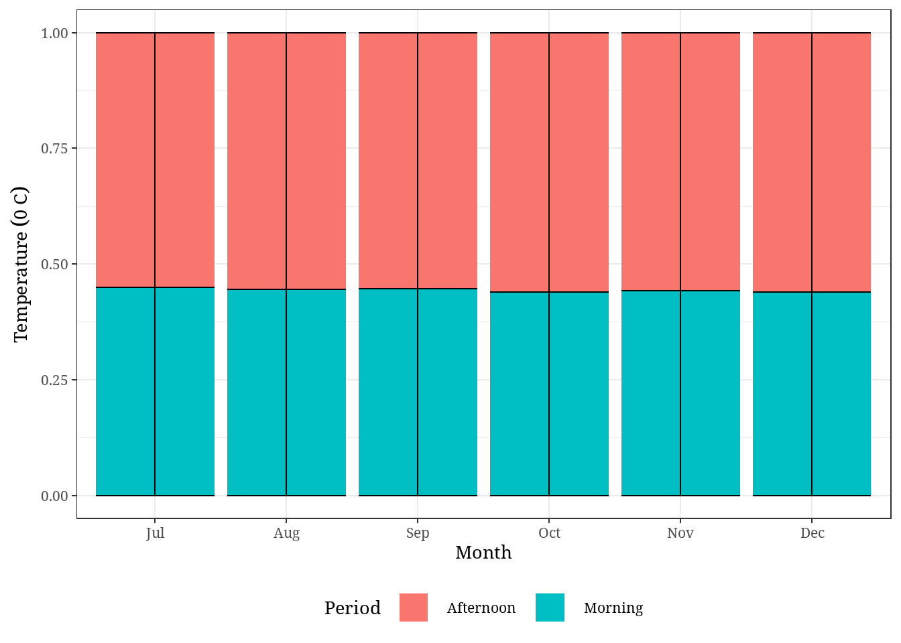

Jkuat Work
Data
Summary Statistics for water quality
| Characteristic | Afternoon, N = 281 | Morning, N = 281 |
|---|---|---|
| Temp | 29.66 + 1.15 | 23.65 + 1.11 |
| PH | 7.86 + 0.20 | 7.62 + 0.19 |
| D.O | 7.63 + 0.23 | 8.58 + 0.58 |
| TAN | NA + NA | 0.2000 + 0.0000 |
| NO3 | NA + NA | 10.0000 + 0.0000 |
| NO2 | NA + NA | 0.0100 + 0.0000 |
| 1 Mean + SD | ||
Water Quality across sampling Months
| Characteristic | Jan, N = 01 | Feb, N = 01 | Mar, N = 01 | Apr, N = 01 | May, N = 01 | Jun, N = 01 | Jul, N = 81 | Aug, N = 81 | Sep, N = 81 | Oct, N = 81 | Nov, N = 121 | Dec, N = 121 |
|---|---|---|---|---|---|---|---|---|---|---|---|---|
| Temp | NA + NA | NA + NA | NA + NA | NA + NA | NA + NA | NA + NA | 27.59 + 3.19 | 26.46 + 3.33 | 27.02 + 3.26 | 26.99 + 3.83 | 26.07 + 3.19 | 26.28 + 3.35 |
| PH | NA + NA | NA + NA | NA + NA | NA + NA | NA + NA | NA + NA | 7.75 + 0.21 | 7.73 + 0.19 | 7.75 + 0.21 | 7.67 + 0.24 | 7.75 + 0.24 | 7.76 + 0.28 |
| D.O | NA + NA | NA + NA | NA + NA | NA + NA | NA + NA | NA + NA | 7.92 + 0.47 | 8.15 + 0.49 | 8.00 + 0.49 | 7.93 + 0.95 | 8.17 + 0.49 | 8.32 + 0.85 |
| TAN | NA + NA | NA + NA | NA + NA | NA + NA | NA + NA | NA + NA | 0.2000 + 0.0000 | 0.2000 + 0.0000 | 0.2000 + 0.0000 | 0.2000 + 0.0000 | 0.2000 + 0.0000 | 0.2000 + 0.0000 |
| NO3 | NA + NA | NA + NA | NA + NA | NA + NA | NA + NA | NA + NA | 10.0000 + 0.0000 | 10.0000 + 0.0000 | 10.0000 + 0.0000 | 10.0000 + 0.0000 | 10.0000 + 0.0000 | 10.0000 + 0.0000 |
| NO2 | NA + NA | NA + NA | NA + NA | NA + NA | NA + NA | NA + NA | 0.0100 + 0.0000 | 0.0100 + 0.0000 | 0.0100 + 0.0000 | 0.0100 + 0.0000 | 0.0100 + 0.0000 | 0.0100 + 0.0000 |
| 1 Mean + SD | ||||||||||||
Plots
Physiochemical parameters across sampling months

Bar Graphs
Stacked bar charts

Dodged bar charts

Temperature Dodged
Temperature stacked

Just Temperature